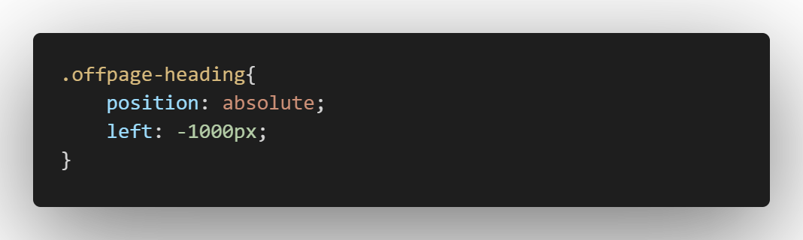

Off-Page Headings:
- useful when wanted to give screen reader users a navigational aid without cluttering presentation.
- using CSS to posiiton headings off-screen.
- don't use diaplay:none or visibility:hidden.(hard to perceive for screen reader users)

Meaningful Link text:
- screen readers can find and list links.
- description for links must be meaningful.
- avoid using "click Me", "Read this", etc.,
- avoid using URL for link description.